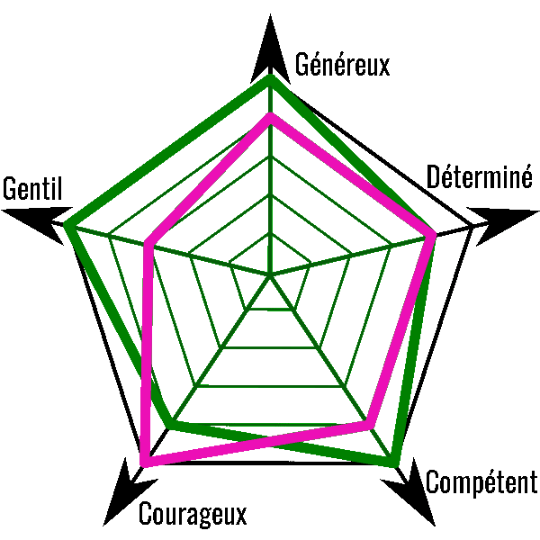

Leadership
Je suis un leader dans l’âme.
En effet, dans les nombreux projets que j’ai entrepris j’ai toujours assumé un rôle de meneur où je devais guider mon équipe vers la réussite dans une bonne humeur globale.
Par exemple, j’ai participé à la Nuit de l’Info avec mon équipe LES SERPENTS AUSTRALIENS DU PACIFIQUE et j’ai été chef d’équipe.
Accéder au site de la Nuit de l'Info
 Qualités
Qualités
Voici un condensé de mes différentes qualités, sans vouloir me vanter bien évidemment.
Je suis très généreux et gentil et cela fait de moi un excellent élément pour une équipe de programmation.
Peut-√™tre alors pour votre entreprise prochainement ? üòâ

 Langages de programmation
Langages de programmation C : Je maitrise le C grâce à mes connaissances en C++. J'ai pu approfondir mes connaissances à l'IUT.
C : Je maitrise le C grâce à mes connaissances en C++. J'ai pu approfondir mes connaissances à l'IUT.
 HTML/CSS/JS : Je me suis initié moi-même aux langages du Web alors que je n’avais seulement 9 ans, en CM1.
HTML/CSS/JS : Je me suis initié moi-même aux langages du Web alors que je n’avais seulement 9 ans, en CM1.
 PHP : Le PHP m’a été enseigné dans mes études et je maitrise assez bien; c’est parfois mon point fort !
PHP : Le PHP m’a été enseigné dans mes études et je maitrise assez bien; c’est parfois mon point fort !